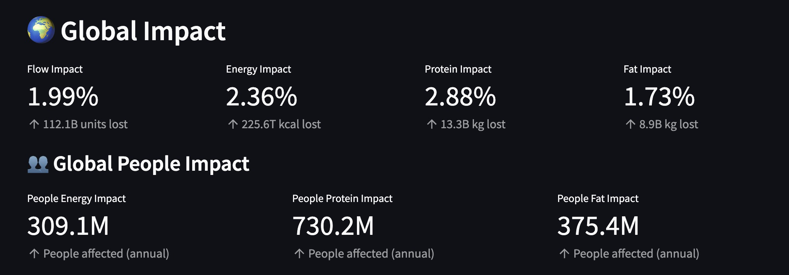
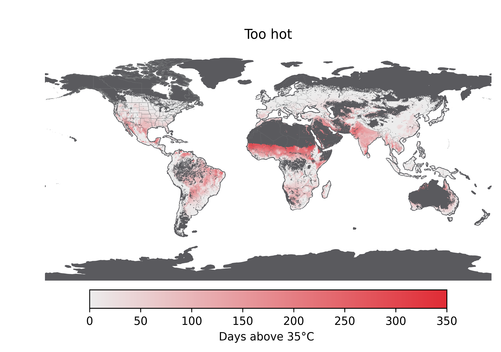
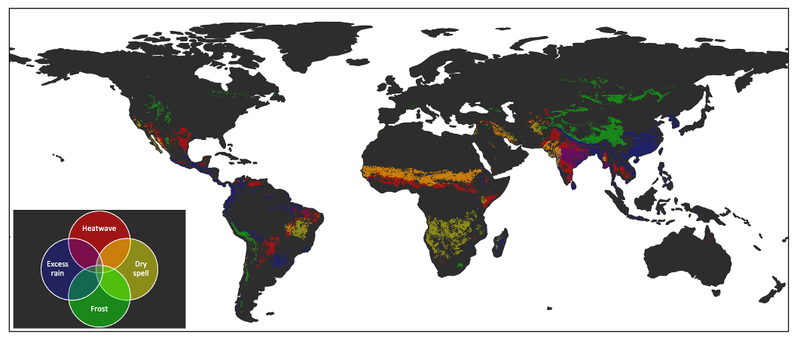
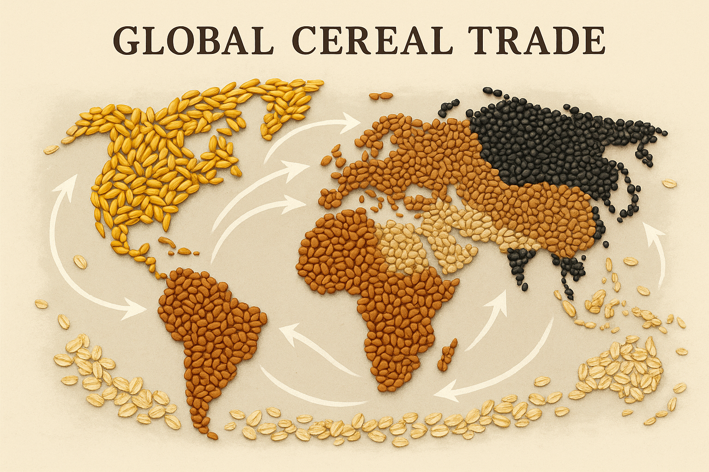
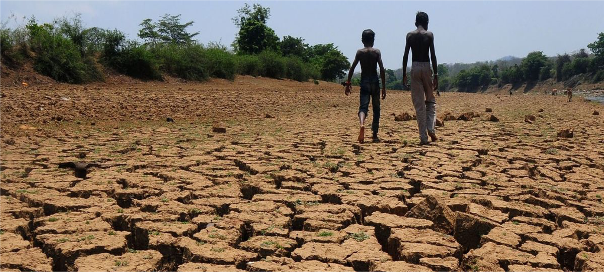

Canada Food Flows
Where do your fruits and vegetables really come from?

Global Digital Food Twin
A digital twin of the world’s food system.

Food Flow Impact Tool
What happens if a major food-producing region goes offline?

Canada's Food Supply and Climate Change
How climate-resilient is Canada’s fruit and vegetable supply?

Climate Change and Food Prices
Can extreme weather abroad raise your grocery bill?

Future Climate Exposure over Agricultural Lands
What will climate extremes mean for global food production?

Smallholders & Future Weather Extreme Exposure
Will climate extremes hit small farms harder?

Global Cereal Trade & Climate Change Impacts
Can global trade help buffer climate shocks in food systems?

Land-use Change & Droughts
Is rainfall the only driver of droughts?